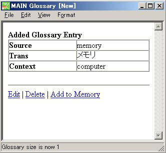
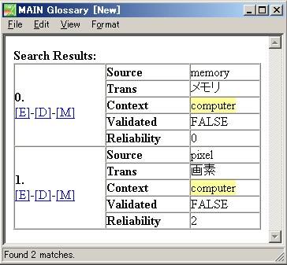
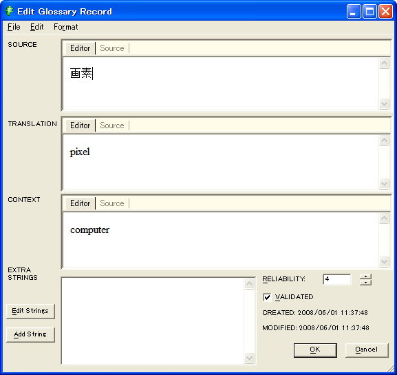

As with the Memory window, the simplest way to edit an entry is to enter Edit Mode, and edit the entry right on the screen. See 3.4 Edit Mode for details.
You can also edit entries from the Edit Entry dialog. The procedure for doing so depends on whether a single record or a list of records is being displayed.

To edit an entry in this state, click on Edit.

To edit an entry in this state, click on the [E] corresponding to the record you wish to edit.
The Edit Glossary Record dialog appears:

This dialog is functionally identical to the one used for editing memory entries. See 3.2.3 Edit an Entry for information on using this dialog.
Back (Open a Glossary) | Next (Delete an Entry)